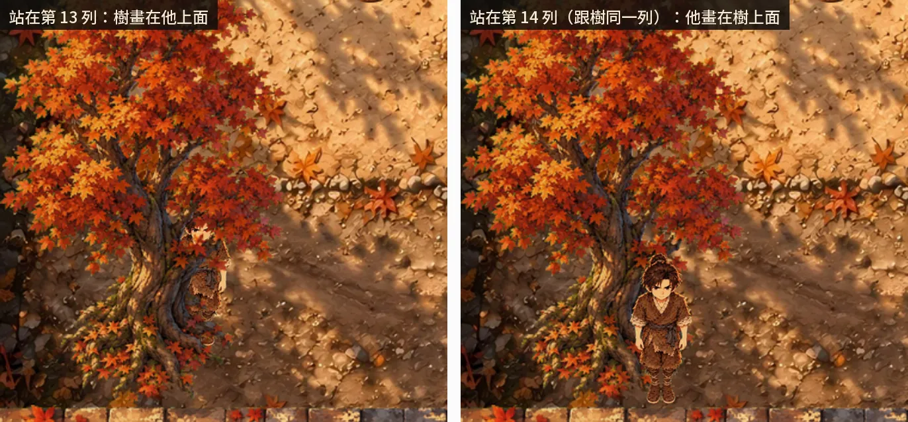
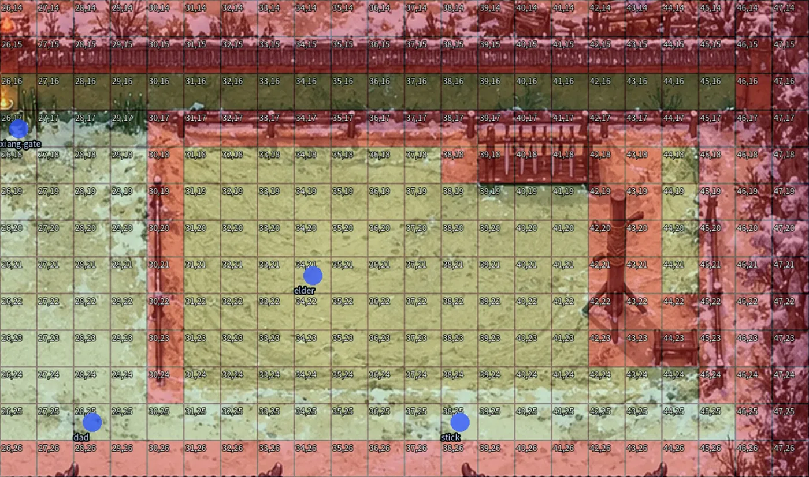
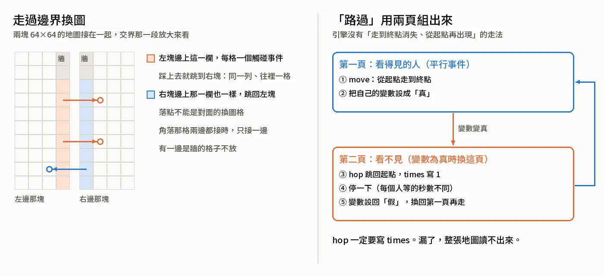
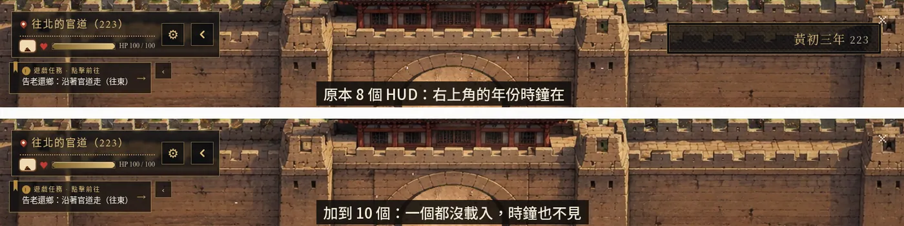
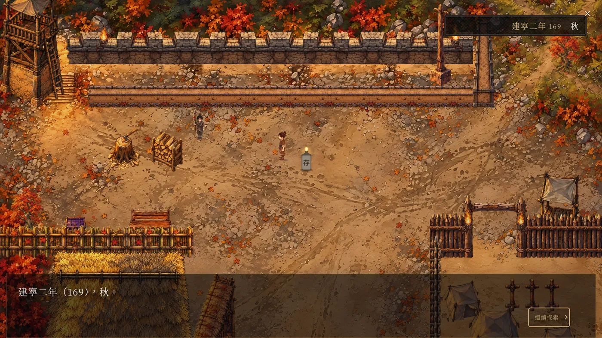

Larch RPG 引擎實測
《續》現在是 111 張地圖、609 張卡。做的過程踩到 Larch RPG 引擎很多條上限，最常見的樣子是整張地圖只剩一行「這張地圖的資料無法讀取」。這一章一條一條記：哪一天踩到、怎麼發現的、怎麼繞過、現在用哪個檢查擋住。大部分是 AI 讀本機預覽器附的引擎原始碼、在本機預覽實測出來的，幾條是我試玩時看到的。想用 Larch 做 RPG 的人，動手前可以把這一章當清單看一遍。
整張地圖讀不出來
畫面上只看得到這一行。2026-10-21 寫這一章時，AI 在本機預覽把下表大部分重跑了一次：故意弄壞一張測試用的地圖，原因要從頁面的文字裡讀，例如「RPG Error: 角色動畫格式不正確」。下表的「引擎報的原因」除了任務提示那一條，都是這次重跑抄下來的。
| 日期 | 踩到什麼 | 引擎報的原因 | 現在的做法 |
|---|---|---|---|
| 2026-10-07 起 | 同一格放了兩個事件 | 事件需在地圖內，每格一個事件 | 見下面〈一格只放得下一個事件〉 |
| 2026-10-15 | 隨機挑一句的動作超過 10 個分支（想念的句子一組太多句） | 隨機數值需要最小到最大（-9999–9999）與 1–10 個分支，每個分支的數字由小到大 | 分組；tests/check_crowd.py 擋 |
| 2026-10-16 | 同一張地圖兩個事件 id 撞名（推車和商車都叫 f3d-cart） |
ID 必須唯一，且只能包含英數、底線、連字號 | 改名；短測開頭先查 |
| 2026-10-17 | 事件 id 有中文 | 同上 | id 一律英數，例如 decor-<序號> |
| 2026-10-19 | 第五章趕工那張的任務提示 18 筆 | 遊戲任務格式不正確 | Larch 當天取消上限，18 筆還原 |
| 2026-10-20 | 自製下雪一格畫面 256×960、24 格；傷兵道具圖 384×677 | 角色動畫格式不正確 | 每格寬高最多 512 像素、最多 16 格；check_static 9n |
| 2026-10-21 | 地圖 65×65 | 地圖寬高需為 2–64，格子尺寸需為 8–96 | 一張最大 64×64，大的地方好幾張接 |
| 2026-10-21 | hop 沒寫 times |
跳躍需選擇主角或這個角色、1–10 次，目標要在地圖內 | 一定寫 times |
任務提示那一條的經過：2026-10-19 AI 在做瀏覽器測試加速，跑到第五章發現趕工那張地圖進不去。任務提示（左上角那個「遊戲任務」）有 18 筆，當時引擎上限 16。AI 先拆成 16 筆、在 check_static 加了筆數檢查；我去問 Larch 能不能放寬。Larch 回覆這是他們自己設的上限，先放寬到 64，同一天就取消了，18 筆還原。當晚任務提示的字數、條件數上限也取消了。
整個畫面壞掉的那幾種
比讀不出一張地圖更嚴重的，是整個畫面、整個播放器壞掉。踩過的：
- 2026-10-07：表情泡泡用了
ellipsis、粒子用了leaves、一個選項只有一個答案。現在照白名單擋：泡泡只有 heart、exclamation、question、happy、sad、anger、sweat、sleep、music、idea、rice、apple 這十二種；粒子只有 none、motes、petals、fireflies、embers、sparkles；選項至少兩個。 - 2026-10-09：畫面特效（閃、震、暗場）的時間設成 90 毫秒，要 100 到 5000。
- 2026-10-09：一盞光的半徑設成 14，要 0.5 到 12，而且在地圖裡。
- 2026-10-09：角色倍率超過 8。一團灶火的事件格離火太遠，動畫圖被撐寬到 8 格以上。
劇本裡只有一個答案的地方（第二章井邊、第九章最後那句「我愛妳。」），就直接演出、記進「思念」，不跳選項。
一張地圖最大 64×64
《續》現有的地圖裡，最大的兩張是嚴家 48×54 格、五原 56×40 格。2026-10-21 決定地圖整個重做，要畫整座城，AI 先實測，65×65 引擎就報「地圖寬高需為 2–64」。所以一張最大 64×64，一格半公尺，大的地方用好幾張接起來。
地圖重做分三層，是我定的：大地圖（64×64，一格約 18 公里）、城或村（好幾張 64×64 的塊相連）、屋內（從門進去的小地圖）。五原的色塊預覽是 13 張 64×64 接起來的，怎麼接寫在下面〈走過邊界換圖〉。
鏡頭只有三種倍率
AI 實測的算法：鏡頭至少看 24×18 格，再乘一個倍率，close 1.35、normal 1、wide 0.75；不設鏡頭，就是整張地圖蓋滿畫面。換算到 16:9 的畫面，wide 約 32×18 格，normal 約 24×13.5 格，close 約 18×10 格。玩家沒辦法自己縮放。

這件事 2026-10-07 就碰過。那天我說「希望效果細緻一點」，AI 把原本的一格切成 2×2 的細格。normal 至少看 24×18 格，切細以後畫面上的人和物件會變兩倍大，所以《續》的地圖都不設鏡頭，讓整張圖蓋滿畫面；人物倍率從 1.6 改成 3.2，資料庫裡角色的走路速度加倍，看起來跟切細以前一樣大、走起來一樣快。
重做地圖的鏡頭是我定的：城裡每一塊用 wide，屋內用 normal，大地圖不設鏡頭、人物縮一半。
一格只放得下一個事件
一格只能有一個事件，連只負責顯示一張圖的「自由圖片」事件也算在內。違反就是上表第一列那一行錯誤。寫這一章截圖時又碰到一次：AI 把主角的起點挪到魏家門口最下面那一排，那一排是出巷子的觸碰事件，整張讀不出來。
繞法：
- 物件的自由圖片事件，放在人走不到的格子。舊地圖放在地圖最外一圈（
xu/game/src/layout.py的hold_cells），新地圖放在牆裡、屋裡。 - 同一格要演好幾種開場，就併成一個事件、分好幾頁（
ch3_maps.one_cell）。 - 第五章巡兵的視線，兩個停靠點重疊的格子併成一個事件，每個停靠點一頁。
- 火的事件格被別的事件佔了，就把事件放旁邊一格、圖往回偏（設計檔的
cell_x）。 - 下雪的事件附近都被佔了，那一塊就少一片雪，
check_static會數出來。
互動點的名牌也繞過一次（2026-10-18）。新介面的名牌是不透明的，疊在補畫的物件上會把物件蓋掉，所以把名牌拆出來，放到圖框頂端那一格，另外放一個沒有步驟的事件。這個事件不能用平行觸發：實測沒有步驟的平行事件不顯示名牌。
圖照下緣排前後
AI 讀引擎原始碼查到的規則（2026-10-08）：人和事件一起排前後。自由圖片的排序值是圖框的 y + h − 1，人用自己站的那一列，小的先畫；一樣大的話圖先畫，人在上面。
所以每個物件的圖框下緣，就對齊它佔地最下一列的下緣。站在南邊的人畫在物件前面，站在圖框裡北邊的人被蓋住。

跟著來的幾條：
- 長的物件整塊只有一個排序值，走在旁邊的人會排錯。地圖邊的樹、草垛、直的柵欄切成一列一條；南北向的長牆每 5 列切一張（建城工法：拼出來的城）。
- 平鋪在地上、人走得上去的（竹蓆、地上的小路），不能當自由圖片，人走進它的範圍會被它蓋住。2026-10-20 我試玩第八章看到竹蓆蓋住人，改成合成進地面圖（
art/bake_flat.py）。第九章第六天才出現的小路，直接畫進地面，前五天用原地面同一塊當物件蓋住。 - 圖框還有一個
free.block，可以把圖框下面幾列設成牆。《續》不用：圖框下緣含陰影和雪，不準，碰撞另外寫。 - 揮刀的武器圖，引擎固定畫在角色腳下那一格（轉軸在格子 y+0.62，武器寬 0.95 格）。《續》的人物有三格多高，刀會在腳邊揮。2026-10-08 我定了武器圖一律透明，揮刀聲、命中閃光、傷害數字、擊退都留著，代價是背包裡環首刀的圖示也是透明的。
- 自由圖片沒有角色圖那個 512 像素的上限。整座房子、整排牆都是自由圖片，要動的（火、雪、會走的人）才用角色圖。
擋路格和看不見的牆
碰撞是一層看不見的圖層，要擋的格子塗一格圖塊（mapkit.collision_layer）。最早那幾張整張俯視畫的地圖，每一格擋不擋寫在各地圖的 cell() 裡，改了就重產疊圖，一格一格看：綠的能走、紅的擋、藍點是事件（python3 art/overlay.py <圖>）。

2026-10-09 我說棚子旁邊走不過去，地圖不要有看不見的牆。AI 的做法：產圖以後量每個佔地格，物件圖在那一格畫到的不到四成，就自動放開（layout.thin_cells）；一格一根的直柵欄、設計檔寫 solid: true 的例外。check_static 列出還擋著、圖上又沒畫的格子，負控制是不放開時，燒過的五原那個棚子的 (18,24) 要抓得到。
另外幾條：
- 互動事件的
solid，在事件不是角色（actor: none）時沒有作用。嚴家的水缸只放一個事件擋不住人，要把水缸那兩格寫進牆（2026-10-18）。 - 觸碰事件要「踩進去」才算。第五章倒完最後一筐土，人還站在後門門洞裡，把那一格換成「回城南宅」不會觸發，回家改放在門外那一排。
- 用觸碰事件把人頂回去一格（
move主角一格），在動作戰鬥的地圖上沒有作用。第七章南門改成站著的兵擋路。
走過邊界換圖、路過的人
這兩個做法是 2026-10-21 做五原色塊預覽時實測出來的。

走過邊界：兩塊相接的那條邊上，每一格各放一個觸碰事件，跳到隔壁那一張同一個位置、往裡一格，落點不能是對面的換圖格；角落那一格兩邊都接時，只接一邊。node tests/city_walk.mjs 確認北門兩邊走得過去，python3 art/wuyuan/plan.py 擋相鄰兩塊的邊對不上（一邊能走、一邊是牆）。
路過：我要城裡有人從街的一頭走到另一頭，消失，再從起點出現。引擎沒有這種走法，用兩頁組：看得見的那一頁在背景走到終點，把自己的變數設成真；看不見的那一頁在背景用 hop 跳回起點、停一下，再把變數設回假。hop 一定要寫 times，漏了整張地圖讀不出來。2026-10-21 AI 在本機做了正反兩個測試：寫了 times: 1 的地圖正常，沒寫的就是上表那一行錯誤。
其他會動的人：
- 叫賣的：背景事件
wait→balloon（泡泡指著自己）→loop。 - 校場跑步繞圈：一個
move最多 8 段、每段最多 20 步，切成幾個move再loop。 - 隨機走動：引擎的隨機走法固定 0.65 秒一步。2026-10-15 我說隨機移動的頻率不要一樣、不要那麼快。AI 把每個人改成「站著」「走動」兩頁，配一個節拍器：每組隨機等 2.5 到 11 秒才走 1 到 3 步（
src/wander.py）。 - 來回走：我定的是只有巡邏的兵來回走，其他人來回走很怪。
- 事件不能跟著人走。第五章巡兵的視線，是用「停靠點加每一點一張光」做出來的，寫在配樂、音效與天氣光影。
HUD 最多 8 個
《續》自己做了一個外掛 xu-voice，裡面 8 個 HUD：說不出口、蓋板、地窖的米、準備出路、年份與刻痕、乾糧、右上的時鐘、心境面板。
2026-10-18 加到第 9 個時，所有 HUD 一起不見，地圖和事件照跑，沒有任何錯誤訊息。所以心境面板和升階的小提示合成一個 HUD。2026-10-20 我問「應該都不限制了吧」，前一天 Larch 才取消了任務提示的上限。AI 用當天 13:17 更新的 Larch 程式重測：8 個全部載入，10 個、16 個一個都沒有。2026-10-21 寫這一章時，8 個和 10 個又各跑了一次，結果一樣。這個 8 是實測值，原始碼裡沒找到寫明的那一行。

原始碼裡查得到的是另外幾條：
- HUD 的寬高被夾在 32 到 640 像素，只能貼四個角。「說不出口」因此是偏左上的一個大方塊，沒辦法放正中間；下雪也因此沒辦法用 HUD 做。
- HUD 要有
visibleVariable才會載入。永遠開著的 HUD，用一個永遠為真的變數hud_on。 - HUD 只能讀變數，不能點了去觸發事件。心境面板沒有手動打開的按鈕，升階和存檔點時自己跳出來約五秒。
- 左上角的地名、血量那一列，引擎沒有一張地圖一張地圖關掉的開關，對話時會自己淡出。
主角的樣子跟著資料庫走
引擎畫主角，用的是資料庫裡「目前的主角」，地圖上主角事件給的圖、綁的角色都蓋不過。換造型要用 hero 步驟換主角，實測換的時候位置不變：
- 坐在門檻上：引擎沒有坐下的動作，換成坐姿的走路圖（
*sit），起身再換回來。 - 第九章那幾張「整張就是一張 CG」的場景圖：一進場先換成整張透明的
nobody9，回到谷口門檻再換回六十二歲。
這個「目前的主角」會跨地圖沿用。2026-10-20 我試玩第七章，划完船進屋、進曹營都還在划船。現在離開地圖前一定換回走路的樣子，check_static 9l 擋，負控制是故意不換要抓得到。
事件分頁和自動觸發
- 事件分頁：引擎從最後一頁往前找，第一個條件成立的那一頁算數。第八章每一年不一樣的內容都寫成分頁，條件是那一年。
- 會自動演的頁，跟可以按的頁，不能放在同一個事件上。引擎記著這個事件這次進圖跑過沒有，跑過了，自動觸發就不再啟動；玩家按動作鍵跟它說話也算跑過。2026-10-20 給第一章的娘加了街上的對話，邏輯模擬器馬上卡住：先跟娘說話，她就永遠不會把人拖走。修法是「被拖走」那一頁改成條件觸發。
- 平行事件的條件，不要依賴它自己會改的變數。第七章七輪弩箭由三個平行事件接力，靠接力變數
c7_blk交棒。 - 動作戰鬥的地圖上：互動鍵是 J 或空白鍵，Enter 不算；戰鬥中跳出地圖對話，整張地圖停住，計時器也停；撞上來的敵人會把地圖對話打斷，所以戰鬥中的心聲改成直接寫進 HUD。
- 步數上限：原本記的是一段動作最多 32 步，2026-10-20 再查已經是一段 999 步、一個事件連同分支 9999 步、條件 16 個、分支三層，本機實測 54 步的事件整段播完。當時為 32 步拆開的事件（例如四十軍棍拆成兩個事件）照舊能用。
存檔點
2026-10-10 我試玩完說：「存檔好像不方便 是不是有需要提醒玩家存檔之類的 至少戰鬥前」。
引擎有一個 save 步驟，會叫出播放器的存檔視窗，關掉才往下（專案沒開存檔功能時，等 1.5 秒就往下，不會卡）。AI 寫的 src/savepoints.py 放在兩種地方：
- 每一場戰鬥開打前：旁白一句「要打一場了。想存檔的話，現在可以存。」，接存檔視窗。這一步放在開打事件的最後：那時劇情進度已經設好、敵人已經在場，讀檔回來就是開打前那一刻。放在中間的話，讀檔會停在進度還沒設好、自動事件又已經跑過的地方，卡死。
- 每一章第一張地圖：主角起點附近 3 到 8 格、四周沒有別的事件的一格，放一個「存檔」點，第一次按先說一句怎麼用。2026-10-15 我要地圖上看得出哪裡能存檔，所以那裡立一塊小石碑（
art/savestone.py）。
node tests/save_probe.mjs 驗：存進第一格、重新整理、按「繼續遊戲」，回到同一張地圖。還有一件要我在一般瀏覽器確認：存檔視窗按 Esc 關不掉，要按右上角的叉；無頭瀏覽器關掉視窗以後，鍵盤焦點回不到地圖，測試另外補了一下。
年份標記
2026-10-10 那一輪試玩，我留了三則同一類的回饋：「劇情是要指又過一年還是怎樣」「這裡也是做一次任務過1年對嗎」「玩家可能體感不到幾秒 但是要描寫出有幾個月」。
AI 寫的 src/timemarks.py 是這樣做的：劇本文字不動，每次跳年、跳季，畫面先暗一下（強度 0.85、1.2 秒），旁白報一句「年號（西元），季節。」，例如「熹平三年（174），春。」；任務提示前面加同一個時間，對話卡加在第一句。右上角另有一個常駐的時鐘 HUD，跳年那一下跟著換；沒有旁白報時間的地圖，一進場也會更新時鐘。check_static 用 is_mark() 擋年號對不上西元的句子。

測試時摸到的
2026-10-19 為了讓瀏覽器測試跑快一點，AI 又摸到引擎幾個行為：
- 地圖每一幀的時間差最多算 50 毫秒。只把時鐘加速的話，3 倍以上走路就追不上，所以每個真的幀拆成最多 6 個小幀。
- 引擎有「點地圖自動走路」：點一格，它自己找路走過去，路會避開觸碰事件。
- 主角還在走路動畫、或者事件和對話開著的時候，引擎不收方向鍵。
日常驗內容不開瀏覽器：xu/game/tools/sim/ 照引擎的事件語意（分頁、自動、條件、平行、各種條件判斷）用 Node 重做一遍，整部遊戲不到一秒走完。它模擬不到的是走路和碰撞、名牌遮擋、介面外觀、計時細節、音訊和存檔視窗，這幾樣靠短測和截圖。截圖要等畫面上的「NOW LOADING」消失，一次只跑一個瀏覽器測試。
不讓同一個坑再踩一次
上面這些，大部分踩到以後都變成一項檢查，多半配一個負控制，故意弄壞，要抓得到。事件 id 的字元、hop 的 times、地圖大小這三條，目前靠產地圖的程式照規矩寫，check_static 沒有另外檢查。平常跑的幾道：
cd xu/game
python3 src/build.py # 產 dist/project.json
python3 tests/check_static.py # 白名單、上限、每格一個事件、角色圖上限、配樂……
python3 tests/check_crowd.py # 路人：撞臉、站在牆裡、走不到、隨機動作的上限
node tools/sim/lint.mjs # 跳轉、任務提示、變數、劇情進度打錯字
地圖正在照這些上限整個重做：五原拆成好幾張 64×64，城裡用 wide 鏡頭，每一塊的邊一格一格接起來。整張畫當地圖、人走到屋後被擋住的做法在走進原畫，一件一件拼的第一套在建城工法：拼出來的城。